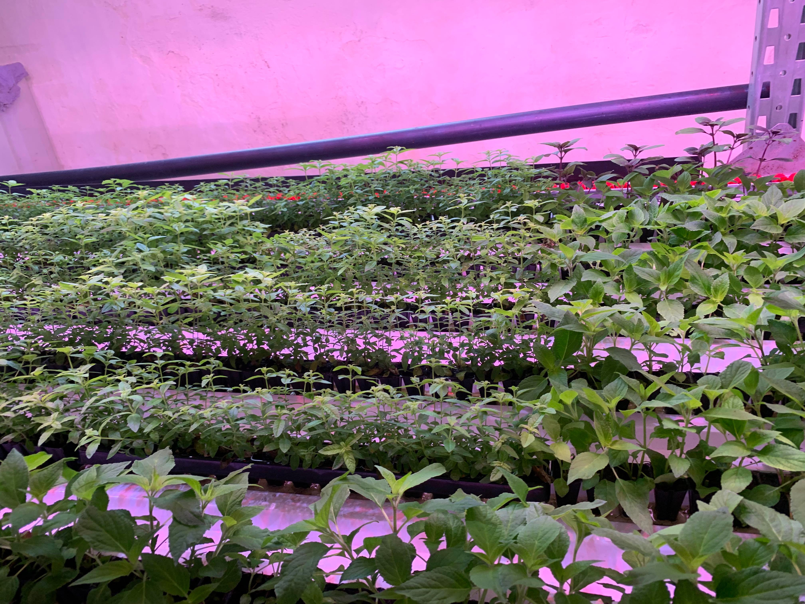
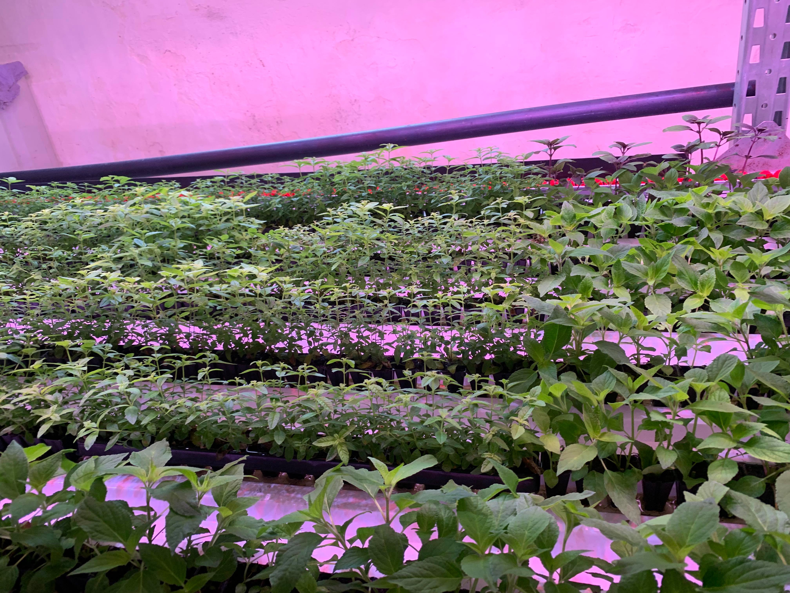

Vores teknologi
Vores vertikale system kan tilpasses dine drivhuse, og opskaleres gradvist, Hvilket gør det ideelt for dig der ønsker at prøve kræfter af med hydroponi og et vertikalt gartneri.
Systemet er specialdesignet til at maksimere dit udbytte på mindst plads muligt. Det gøres ved at der dyrkes i m3 fremfor m2, ved at dyrke 5 lag plantekulturer over hinanden. Derfor betjenes systemet på de korte sider, hvilket minimere den nødvendige arbejdskraft og muliggør den gradvise implementering.

Alt det imponerende
Det er fandeme noget vildt noget, der der hydroponi-halløj.
Profit efter 15 måneder
En investering i Hydrovertic systemet har tjent sig selv ind efter blot 15 måneder, da det øger udbyttet samtidig med at mindske arbejds- og driftsomkostninger.
11 gange mere effektivt
Vertikalt systemer er op til 11 gange mere effektivt end udelukkende traditionel gartneri, da det udnytter dine eksisterende arealer fuldt ud i højden.
Mindre spild af afgrøder
Langt de fleste sygdomme og skadedyr er relateret til brugen af jord. Når man dyrker i vand, er der derfor markant færre trusler og dermed er behovet for pesticider og andre kemikalier fjernet.
Passer til hollandske drivhuse
Systemet laves i både 6 og 10 meters systemer så det passer ind i hollandske drivhuse. Der ud over er det også designet til at passe til CC vogne.
Hydroponics Teknologien
Hydrovertic systemet gør brug af Hydroponi, bedre kendt som Hydroponics, hvilket betyder at planter avles i vand i stedet for jord. Specifikt bygger vores system på næringsfilteknikken (NFT), hvor næringsrigt vand løber over planternes rødder, opsamles, renses og sendes over rødderne igen. På den måde udnyttes hver en dråbe vand og der frigives ikke pesticider ud i naturen.
Der findes mange forskellige teknikker indenfor Hydroponics. NFT har den fordel at det er en robust teknik, der muliggør en stabil og vertikal produktion.

Massere af smukke billeder


 

Software der kan integreres
Vi har udviklet software som hjælper din virksomhed med at overvåge dine planter, så du sikre det bedste miljø for optimal vækst i planterne.
Softwaren kan blandt andet måle parametre som temperatur, luftfugtighed, PH-værdier, CO2 i luften og Electrical Conductivity. Lagring af parametrene tillader dig at analysere på resultaterne så du kan optimere din produktion. Distribuering af gødning kan i samme forbindelse udføres automatisk, planlagt eller manuelt igennem softwaren.
Oftest stillede spørgsmål
Kan jeg bruge systemet som økolog?
Vi tilbyder også det vertikale system til dig der er økolog, da systemet bruger jord i stedet for vand. Med brug af jord kan planterne Ø mærkes, til gengæld er skadedyrsbekæmpelse nødvendigt.
Kan alle typer gartnerier bruge systemet?
Det vertikale system er designet til avl af kortere afgrøder. Systemet kan implementeres fuldt eller delvist i et gartneri. Vores system er også designet til at passe til CC vogne.
Skal vertikalt landbrug erstatte traditionel gartneri?
Systemet er unik designet til at eksistere i sammenspil med din eksisterende produktion. Det kan derfor også implementeres gradvist, tilpasses dine behov og kræver ikke den store omlægning.
Kan jeres system betjenes af ikke-gartnere?
Ja, vores system er designet til at være intuitivt at bruge og automatiseringen tilpasses brugerens niveau.
Lyder det som noget for dig og din virksomhed?
Er du interreseret i at høre mere eller har du spørgsmål til sytemet, så er du velkommen til at skrive eller ringe til os. Vores showroom er også åben til at se teknologien på egen hånd.